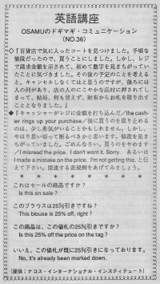

値段を見間違っていました。
Osamu found a coat that he liked at the department store. It was a reasonable price and he decided to get it. But when he went to pay for it, the salespeson showed him the price and Osamu realized he made a mistake in reading the price tag. He thought that he shouldn't buy it because he had a certain budget. But there were so many people behind him and the salesperson gave him such a nice smile, that Osamu took out his money and paid for it. If you really don't want something, don't pay for it. You can say: "I'm sorry, but I changed my mind. I don't want it." or you can tell them that you misread the price. Don't worry, you are the customer and you should have the decision of buying something or not.
百貨店で気に入ったコートを見つけました。手頃な値段だったので、買うことにしました。しかし、レジで請求金額を示されて、はじめて数字を見間違っていることに気づきました。その後の予定を考えると、キャンセルしなくてはと思うのですが、後ろには人の列があり、店の人のにこやかな応対に押されてしまって、結局、何も言えず、財布からお札を取り出すこととなりました。
キャッシャーがレジに金額を打ち込んだ後／the cashier rings up yor purchase.／に買うのをやめるのは、少し勇気がいることかもしれません。しかし、やはり思い切って断わるべきかと思います。値段を見間違っていました。ごめんなさい。買うのをやめます／I misread teh price. I don’t wnat it. Sorry. あるいは、I made a mistake on the price. I’m not getting this. と伝えて下さい。関連する表現例をあげてみましょう。
これはセールの商品ですか。
Is this on sale?
このブラウスは２５％引きですね。
This blouse is 25% off, right?
この商品は、この値札の２５％引きですか。
Is this 25% off the price on the tag?
いいえ、この値札が既に２５％引きになっております。
No, it’s already been marked down.

| © 1995-2013 NACOS International Institute. All Rights Reserved. |